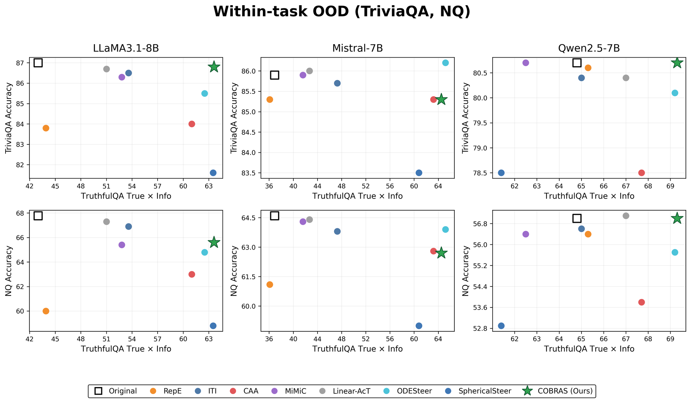
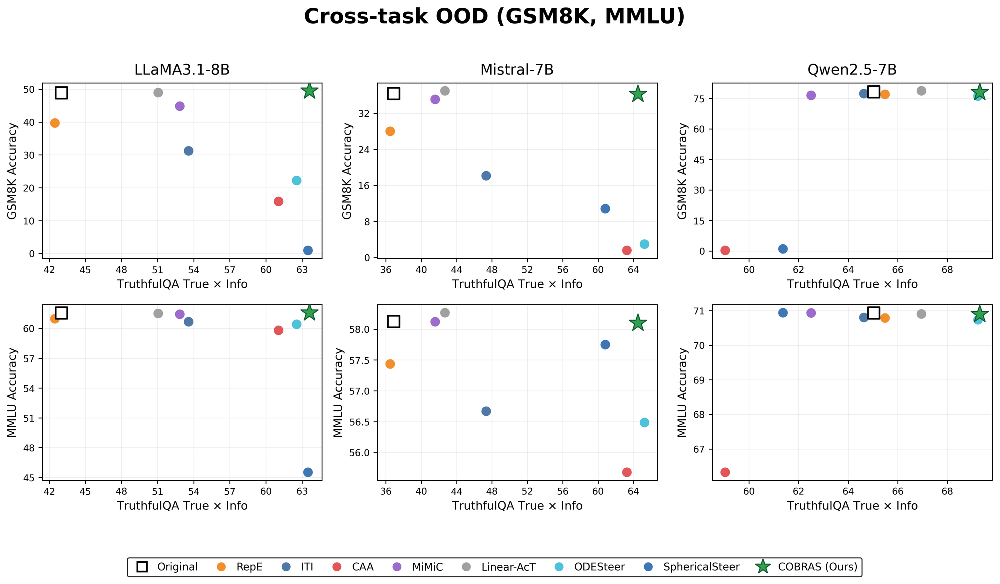

Activation steering changes what a language model does by editing its hidden activations at inference time, without touching the weights.Steering Llama 2 via Contrastive Activation Addition (Rimsky et al., 2024)
Inference-Time Intervention (Li et al., 2023)
The usual motivation is the linear representation hypothesis: properties such as truthfulness, sentiment, or toxicity appear to correspond to roughly linear directions in activation space, so moving an activation along such a direction should move the behavior.The Linear Representation Hypothesis and the Geometry of Large Language Models (Park, Choe and Veitch, 2023)
The simplest recipe collects activations from inputs that show a desired and an undesired behavior, takes the difference of their means, and adds that vector to every activation. Later methods replace the single vector with continuous steering fields,ODESteer (Zhao et al., 2026)
TruthFlow (Wang et al., 2025)
transport maps between the two activation distributions,Controlling Language and Diffusion Models by Transporting Activations (Rodriguez et al., 2025)
or norm-preserving rotations,Householder Pseudo-Rotation (Pham and Nguyen, 2024)
Spherical Steering (You, Deng and Chen, 2026)
and some of them adapt the update to the current activation. Two questions remain open. What population-level objective are these methods optimizing? Many of them implicitly follow a log-density-ratio between desired and undesired activations, without deriving it from a well-posed problem. And when should a steering field be applied at all? A direction fitted on TruthfulQA says nothing about whether the same edit is appropriate for a grade-school math problem. In our experiments, several strong baselines improve TruthfulQA while losing much of their MMLU and GSM8K accuracy.Steering vectors are known to be unreliable across inputs and to misgeneralize out of distribution: Tan et al. (2024), Braun et al. (2025).
COBRAS answers both questions with one object: a Schrödinger Bridge from the undesired to the desired activation distribution, posed on the hypersphere. The bridge's drift gives a steering field that adapts to each activation and reduces to log-density-ratio steering in a limit. The bridge's density says how much support the contrastive data provide for a new prompt, which lets COBRAS leave out-of-distribution prompts alone.
Activations live on a sphere
At a fixed layer, residual-stream norms barely vary across inputs. For the four models we study, last-token norms on TruthfulQA divided by their layer-wise mean have a coefficient of variation between 2.5% (Qwen2.5-7B) and 7.3% (Mistral-7B), and across the later layers of eight architectures it stays below 15%. Almost all of the variation is in the direction of an activation, so COBRAS models the state space as the unit sphere $\Sph=\{\bx\in\mathbb{R}^d:\lVert\bx\rVert=1\}$. It steers the direction and restores the original norm afterward.
Two maps move points on $\Sph$. The logarithmic map $\log_{\bx}(\boldsymbol{y})$ is the tangent vector at $\bx$ that points toward $\boldsymbol{y}$ and whose length is the geodesic distance $d_{\Sph}(\bx,\boldsymbol{y})=\arccos(\bx^\top\boldsymbol{y})$. The exponential map walks along a great circle for as far as a tangent vector says:
where $\Pi_{\bx}=\boldsymbol{I}-\bx\bx^\top$ projects onto the tangent space. Every COBRAS update is an exponential-map step, so an activation never leaves the sphere; adding a vector instead would change its norm.
Steering as a Schrödinger Bridge
Start with the populations rather than single activations. We want to move the undesired distribution $p_-$ onto the desired distribution $p_+$. A trajectory $\bx_{[0,1]}$ records how one activation moves as steering progresses from $t=0$ to $t=1$, and a distribution $P$ over trajectories must start at $P_0=p_-$ and end at $P_1=p_+$. The endpoints alone do not say how activations should travel, so among all such $P$ we take the one closest in KL divergence to a reference process $Q$: Brownian motion on the sphere with diffusion scale $\sigma^2$ and a uniform start, which favors no location and no direction. This is the Schrödinger Bridge problem:Schrödinger (1932); A Survey of the Schrödinger Problem (Léonard, 2013); Diffusion Schrödinger Bridge (De Bortoli et al., 2021)
Its solution reweights the reference by two positive functions, the Schrödinger potentials: $P^\star(\mathrm{d}\bx_{[0,1]})=\varphi(\bx_0,0)\,\psi(\bx_1,1)\,Q(\mathrm{d}\bx_{[0,1]})$. Propagating $\varphi$ forward and $\psi$ backward along the reference dynamics defines both at every intermediate time, and two facts follow. The density of the bridge at time $t$ is the product of the potentials,
and the bridge has a deterministic probability-flow ODE, whose solutions started from $p_-$ have marginal $P_t$ at every time, with a drift equal to the gradient of the log ratio of the potentials:Score-Based Generative Modeling through Stochastic Differential Equations (Song et al., 2021)
The drift is what COBRAS turns into a steering field. The product becomes its test for whether a prompt is supported by the data.
Fitting the bridge on contrastive data
In practice $p_-$ and $p_+$ are known only through contrastive activations $\mathcal{D}^-=\{\bh_j^-\}_{j=1}^{N_-}$ and $\mathcal{D}^+=\{\bh_i^+\}_{i=1}^{N_+}$. Because the KL objective splits into a term over start and end points plus a term that vanishes when paths follow the reference, the bridge reduces to a static problem over pairs. On the samples, that problem is entropic optimal transport with a geodesic reference coupling:
The optimal plan factorizes just like the continuous bridge, $\widehat{P}^{\star}_{01,ji}=\hat\varphi_{0,j}\,\hat\psi_{1,i}\,\widehat{Q}_{01,ji}$. The Sinkhorn algorithm finds the two potential vectors by alternately rescaling to match each marginal.Sinkhorn Distances (Cuturi, 2013) Unlike Schrödinger Bridge solvers for generative modeling, nothing here is a neural network, and fitting is cheap: 13 ms on one A100 for $N_+=1{,}311$ and $N_-=1{,}672$ activations.
- desired partners per undesired sample
- –
- mass kept on the same side
- –
A steering field for every activation
The fitted potentials are attached to samples, but steering needs a direction at whatever activation $\bx$ the model produces. COBRAS evaluates two weighted kernel sums at $\bx$, with $K_b(\bx,\bh)=\exp\!\big[-d_{\Sph}(\bx,\bh)^2/2b\big]$:
In $\widetilde{\psi}_b$, the bracket for each desired sample collects the undesired samples that the reference connects to it, weighted by their fitted potentials and by how close they are to $\bx$; the outer kernel adds the desired sample's own proximity. $\widetilde{\varphi}_b$ swaps the roles. Mirroring the drift of the probability-flow ODE, the steering field is $\bv(\bx)=b\,\nablaS\log\big(\widetilde{\psi}_b(\bx)/\widetilde{\varphi}_b(\bx)\big)$, with the brackets held fixed while differentiating. Written out, it is a pull minus a push:
where the weights $w^\pm(\bx)$ are positive and sum to one within each population. Both the pull and the push depend on where $\bx$ is, so two activations a short distance apart can be sent to different parts of $p_+$.
Steer an activation from
or click anywhere on the sphere
- alignment $s(\bx_0)$
- —
- gate $g(\bx_0)$
- —
- angle to $\bmu$, $\theta_0$
- —
- distance traveled
- —
- Pick a starting point.
How far to steer, and whether to steer at all
The field only sets a direction. COBRAS normalizes it and sets the step length with two factors.
Alignment. An activation that already looks desired should move less. Let $\bmu$ be the normalized difference between the desired and undesired means. Following SphericalSteer, COBRAS compares von Mises–Fisher scores for $\bmu$ and $-\bmu$ and keeps the undesired share:
Support. Alignment says nothing about whether the contrastive data cover a prompt at all: a math problem can sit on the undesired side of $\bmu$ and still receive a large $s$. The bridge's density is the product of its potentials, so COBRAS turns the fitted potentials into two kernel sums with a small bandwidth $b_g$ and scores a prompt's last-token activation by
where a larger $u$ means less support. To calibrate it, COBRAS compares $u(\bx)$ with the scores of held-out in-distribution prompts $\mathcal{D}_{\mathrm{ref}}$: the percentile $r(\bx)$ is the fraction of reference prompts that score lower, and the gate
leaves the step untouched up to the coverage percentile $p$, ramps it down linearly above it, and switches steering off once $u(\bx)$ exceeds every reference score. Calibration uses no out-of-distribution prompts. The gate is computed once at the last prompt token and reused for every generated token.
- $\cos(\bx,\bmu)$
- —
- $s(\bx)$
- —
- percentile $r(\bx)$
- —
- $g(\bx)$
- —
- total step $T s g\,\theta_0$
- —
The full procedure
For each token, COBRAS fixes the step length from the starting activation $\bx_0$, scaled by its angle $\theta_0=\arccos\cos(\bx_0,\bmu)$ to the contrastive axis. It then takes $K$ geodesic Euler steps, re-evaluating the field after each one:
Algorithm 1 COBRAS
Require: contrastive activations $\mathcal{D}^\pm\subset\Sph$, reference prompts $\mathcal{D}_{\mathrm{ref}}\subset\Sph$, regularization $\varepsilon$, support bandwidth $b_g$, horizon $T$, coverage $p$, steps $K$, concentration $\kappa$
Offline fitting and calibration
- Form the reference weights $\widehat{Q}_{01,ji}\propto e^{-c_{ji}}$
- Fit the potentials $\hat\varphi_{0,j}$, $\hat\psi_{1,i}$ with Sinkhorn
- Compute the contrastive axis $\bmu$
- Store the sorted reference scores $u(\boldsymbol{z})$ for $\boldsymbol{z}\in\mathcal{D}_{\mathrm{ref}}$
Online steering of $\bx_0\in\Sph$, starting with the last prompt token
- if $\bx_0$ is the last prompt token then compute $g_{\mathrm{prompt}}\gets g(\bx_0)$ and cache it else reuse the cached $g_{\mathrm{prompt}}$
- Evaluate $s(\bx_0)$ and the step size $\Delta$; if $\Delta=0$ return $\bx_0$
- for $k=0,\dots,K-1$ do
- $\bv_k\gets\bv(\bx_k)$ attraction minus repulsion
- $\bx_{k+1}\gets\exp_{\bx_k}(\Delta\,\bv_k/\lVert\bv_k\rVert)$ (or $\bx_{k+1}\gets\bx_k$ if $\bv_k=\boldsymbol{0}$)
- return $\bx_K$, rescaled to the original norm
In the experiments, $K=10$ and $\kappa=20$, and $\varepsilon$ is the squared median 5-nearest-neighbor geodesic distance in $\mathcal{D}^+\cup\mathcal{D}^-$. Sinkhorn runs five sweeps, and the support bandwidth is $b_g=\varepsilon/256$. The field uses a separate bandwidth for each population, equal to the largest squared distance from $\bx$ to that population.
Steering methods as log-density-ratio flows
The bridge view also explains where the usual steering objective comes from. As $\varepsilon\to\infty$, the reference coupling becomes uniform, the bracketed coefficients become constants, and they drop out of the logarithmic gradient.
Proposition 1 Reduction to the log-density-ratio field
Fix the contrastive sets $\mathcal{D}^-$, $\mathcal{D}^+$ on $\Sph$ and the bandwidth $b>0$. As $\varepsilon\to\infty$, the field $\bv$ converges uniformly, at rate $O(1/\varepsilon)$, to the gradient of the log ratio of the two kernel density estimates:
At finite $\varepsilon$, the field also uses the transport between the two datasets; in the limit it sees only their separate densities. Many existing methods follow the same log-density-ratio flow, $\dot{\bx}_t=\nabla_{\mathcal{M}}\log\big(p_+(\bx_t)/p_-(\bx_t)\big)$, each with a particular geometry, number of steps, and density model:
| Method | Manifold $\mathcal{M}$ | Steps $K$ | Density model | Induced direction |
|---|---|---|---|---|
| CAA | $\mathbb{R}^d$ | 1 | $p_\pm=\mathcal{N}(\bmu_\pm,\boldsymbol{I}_d)$ | constant, $\bmu_+-\bmu_-$ |
| SphericalSteer | $\Sph$ | 1 | $p_+=\mathrm{vMF}(\bmu,\kappa)$, $p_-=\mathrm{Unif}(\Sph)$ | Slerp toward $\bmu$, $\propto\Pi_{\bx}\bmu$ |
| ITI (probe) | $\mathbb{R}^{d_h}$ | 1 | linear logistic probe $p_{\boldsymbol{\theta}}(\bx)$ | probe normal $\boldsymbol{\theta}$ |
| HPR | $\Sph$ | 1 | linear probe, Householder reflector $\boldsymbol{H}$ | initial Slerp toward $\boldsymbol{H}\bx$ if $\boldsymbol{\theta}^\top\bx<0$ |
| ODESteer | $\mathbb{R}^d$ | >1 | polynomial count-sketch $\boldsymbol{w}^\top\boldsymbol{\Phi}(\bx)+\beta$ | $\boldsymbol{J}_{\boldsymbol{\Phi}}(\bx)^\top\boldsymbol{w}\,/\,\lVert\boldsymbol{J}_{\boldsymbol{\Phi}}(\bx)^\top\boldsymbol{w}\rVert$ |
| COBRAS | $\Sph$ | >1 | spherical kernels, fitted Schrödinger potentials | $\sum_i w_i^+\log_{\bx}(\bh_i^+)-\sum_j w_j^-\log_{\bx}(\bh_j^-)$ |
Helpfulness, truthfulness, detoxification
We compare COBRAS with RepE, ITI, CAA, MiMiC, Linear-AcT, SphericalSteer, and ODESteer on four base models (Falcon-7B, Mistral-7B, LLaMA3.1-8B, and Qwen2.5-7B) and three objectives, following ODESteer's setup. Helpfulness on UltraFeedback is measured by win rate against the unsteered model under a reward model. Truthfulness on TruthfulQA is the share of answers judged both true and informative (True×Info). Detoxification on RealToxicityPrompts is measured by Perspective API toxicity. Every number is a mean over three seeds.
Show the numbers
COBRAS improves the primary metric over the unsteered model for every task and model. It has the highest UltraFeedback win rate on all four models, improving on the unsteered model by 2.8, 7.1, 9.7, and 1.9 points. It also has the highest TruthfulQA True×Info on all four, with the largest gains on Mistral-7B (+29.5) and LLaMA3.1-8B (+25.1). It reduces toxicity by 41–54% relative to the unsteered models and is the least toxic on three of four. Other methods win individual metrics, often by giving up informativeness, perplexity, or diversity; COBRAS is the most consistent across all three objectives.
Steering without breaking other skills
A steering field fitted on TruthfulQA is applied to every prompt the model sees. To test what that does elsewhere, we fit every method on TruthfulQA and evaluate it on Natural Questions and TriviaQA (shifts within the same task) and on MMLU and GSM8K (shifts to other tasks), with the support gate on for COBRAS. Several strong baselines raise TruthfulQA while losing much of their GSM8K and MMLU accuracy. Across LLaMA3.1-8B, Mistral-7B, and Qwen2.5-7B, COBRAS reaches the largest or near-largest TruthfulQA gains while keeping OOD accuracy close to the unsteered model.
The gate does this by recognizing prompts it has no data for. Its score separates TruthfulQA from each OOD prompt set with an AUROC between 84% and 100%. At coverage $p=0.7$, the average fraction of the step that survives drops from 85% on held-out TruthfulQA prompts to at most 7.3% on GSM8K and essentially zero on MMLU. NQ and TriviaQA reuse TruthfulQA's instruction format and keep more of the step.
Show the numbers
Gating is not specific to COBRAS. The support score motivates a simpler external gate that scales any method's displacement by its $k$-th nearest-neighbor distance to the undesired samples.Following Out-of-Distribution Detection with Deep Nearest Neighbors (Sun et al., 2022). In the small-bandwidth limit, $2b_g\,u(\bx)$ tends to the sum of squared nearest-neighbor distances to $\mathcal{D}^-$ and $\mathcal{D}^+$. On LLaMA3.1-8B this gate brings GSM8K and MMLU back to near-unsteered levels for CAA, ODESteer, and SphericalSteer too. It costs each method 1.8–4.5 points of True×Info, and with the same gate COBRAS still scores highest. COBRAS's own support gate keeps more of the gain than the kNN gate (64.8 against 63.6 True×Info).
Show the numbers
The coverage $p$ is the knob between the two goals. A higher $p$ steers more prompts, which raises True×Info and eventually starts to cost OOD accuracy.
Show the numbers
All methods and models: the OOD plots from the paper

Within-task shift. Answer-ranking accuracy on TriviaQA and NQ against TruthfulQA True×Info; upper right is better.

Cross-task shift. GSM8K and MMLU accuracy against TruthfulQA True×Info. Falcon-7B is omitted because its unsteered accuracy is low.
What the answers look like
A few generations from the paper. The first two compare COBRAS with ODESteer and SphericalSteer on a TruthfulQA question and on an out-of-distribution GSM8K problem. The other two show every method on one TruthfulQA question and one UltraFeedback prompt.
What each part does, and what it costs
On LLaMA3.1-8B, every component matters. Replacing geodesic quantities with Euclidean ones lowers True×Info from 63.6 to 61.5 and GSM8K from 49.5 to 15.1, because the Euclidean gate attenuates OOD prompts much less. Removing the alignment coefficient raises truthfulness but collapses informativeness, leaving True×Info at 34.3; shortening the horizon to match the average step only recovers 50.4. Removing the gate gives the best True×Info, 67.6, at the price of GSM8K (0.6) and MMLU (44.4). Uniform sample weights have the smallest effect (62.9).
Show the numbers
Fitting runs offline in milliseconds, and the gate is evaluated once per prompt. At decoding time, each steered token needs $K$ field evaluations, each costing $O(N_-N_+ + d(N_-+N_+))$. With full contrastive sets and $K=10$, COBRAS adds 32% to the decoding time per step on LLaMA3.1-8B. Using a quarter of each contrastive set and $K=2$ brings that down to 7%, for 1.8 points of True×Info.
| Configuration | $K$ | Overhead (%) ↓ | True×Info (%) ↑ |
|---|---|---|---|
| Full contrastive sets | 10 | 32 | 67.5 |
| 25% of each contrastive set | 10 | 30 | 66.5 |
| 25% of each contrastive set | 2 | 7 | 65.7 |
| 64 nearest samples per contrastive set | 10 | 22 | 61.6 |
Limitations
The density-ratio reduction assumes a shared, fixed bandwidth and vanishing transport costs, and it does not show that the practical adaptive steering rule is optimal. Pairwise distances and Sinkhorn updates scale with $N_+N_-$, which limits very large contrastive sets: at 100,000 samples per set, the cost matrix alone takes 37.3 GiB. The spherical model rests on norm concentration, which holds tightly for the models studied but more loosely in some layers of Gemma-2-2B and GPT-OSS-20B. Natural next steps are a theory for the adaptive rule, generative bridge solvers such as Iterative Markovian Fitting,Diffusion Schrödinger Bridge Matching (Shi et al., 2023) and learned or more general Riemannian geometries. Support gating also does not guarantee safe behavior: steering can be redirected toward harmful behavior, and biased contrastive data can reinforce biases, so deployment needs evaluation and safeguards suited to the application.
Citation
@inproceedings{dalili2026cobras,
title = {Conditional Optimal Bridge for Riemannian Activation Steering},
author = {Dalili, Seyed Arshan and Sridhar, Ajay Narayanan and
Narayanan, Vijaykrishnan and Mahdavi, Mehrdad},
booktitle = {Advances in Neural Information Processing Systems},
year = {2026},
url = {https://arxiv.org/abs/2607.10517}
}